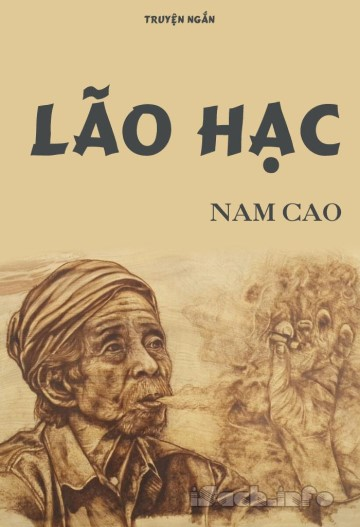

(by Nam Cao)

(Vietnamese review)
Lão Hạc là một truyện ngắn của nhà văn Nam Cao được viết năm 1943. Tác phẩm được đánh giá là một trong những truyện ngắn khá tiêu biểu của dòng văn học hiện thực, nội dung truyện đã phần nào phản ánh được hiện trạng xã hội Việt Nam trong giai đoạn trước Cách mạng tháng Tám.
Lão Hạc, một người nông dân chất phác, hiền lành. Lão góa vợ và có một người con trai nhưng vì quá nghèo nên không thể lấy vợ cho người con trai của mình. Người con trai lão vì thế đã rời bỏ quê hương để đến đồn điền cao su làm ăn kiếm tiền. Lão luôn trăn trở, suy nghĩ về tương lai của đứa con. Lão sống bằng nghề làm vườn, mảnh vườn mà vợ lão đã mất bao công sức để mua về và để lại cho con trai lão. So với những người khác lúc đó, gia cảnh của lão khá đầy đủ, tuy nhiên do ốm yếu hơn hai tháng và cũng vì trận bão mà lão không có việc gì để làm .
Lão có một con chó tên là Vàng - con chó do con trai lão trước khi đi đồn điền cao su đã để lại. Lão vừa coi như con vừa coi như một người thân trong gia đình. Tuy nhiên, vì gia cảnh nghèo khó không nuôi nổi nó nên ông lão đành cắn răng bán con chó đi. Lão đã rất dằn vặt bản thân mình khi mang một "tội lỗi" là đã nỡ tâm "lừa một con chó". Lão đã khóc rất nhiều với ông giáo (người hàng xóm thân thiết của lão). Nhưng cũng kể từ đó, lão sống khép kín, lủi thủi một mình. Rồi một hôm, lão quyết định tìm đến cái chết để được giải thoát sau bao tháng ngày cùng cực, đau khổ.
Và sau khi trao gửi hết tài sản cũng như nhờ vả chuyện ma chay sau này cho ông giáo, Lão Hạc đã kết thúc cuộc đời bằng một liều bả chó do xin từ Binh Tư. Cái chết của lão đau đớn và dữ dội, gây cho người đọc nhiều sự xúc động, xót xa. Lão chết để bảo toàn lòng tự trọng của mình, không để cho cái đói, cái nghèo dồn vào con đường tha hóa như Binh Tư.
Want to try out reading the book by yourself? Buy it now at